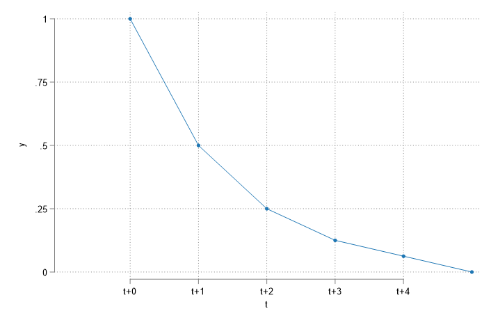
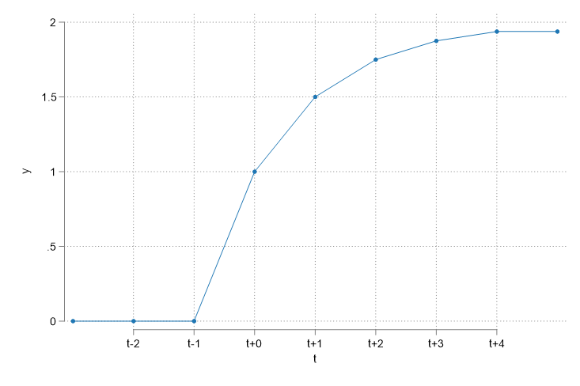

Times Series Part-I
Basic Regression Analysis

The nature of time series data
Time series “works” different from Repeated crossection.
You do not have access to a random sample. (Window of time if fixed)
You have access to a single “random” time line
And in time series, one needs to be quite aware that Data has Baggage…What you see today is the product of everything that happens in the far past.
This is what we call Past Dependent, or simple serial correlation.
- And is why we need to be careful when we use time series data.
The nature of time series data
Data cannot not be arbitrarily reordered. (Past affect future)
- Typical features: serial correlation/nonindependence of observations
Randomness of the data comes from the uncertainty of shocks that affects a variable over time, not from sampling.
Your “Sample” is one realized path that you observe in a narrow window of time.
Because observations are no longer independent, we will need to worry about correlation across time.
In fact, because data may be strongly correlated across time (say your age), it may generate some problems when applying OLS.
- Highly correlated data (high innertia) will have common “trends” that do not necessarity reflect the causal relationship between variables.
So, we must learn “new” tools to deal with this problem.
Basic TS models
1: Static model
- The static model is the simplest model for analyzing time series data. (like SLRM)
- A Static model aims to find correlations between contemporaneous variables.
- Implicity, this assumes there are no dynamic interactions among variables
\[GDP_t = a_0 + a_1 educ_t + a_2 Invest_t + a_3 Unemp_t + u_t\]
Education, investment and Unemployment rate are assumed to affect GDP contemporaneously. But Lags of Leads of the data has no effect on GDP.
- These models are not useful for Forecasting, and Only produces reasonable estimates under very strong assumptions (we will see this later).
2: Finite Distributed Lag model (FDL)
- The FDL model is a simple extension of the static model that allows for dynamic interactions of independent variables.
- Finite Because we choose How far back (lags) to add to the model
- Distributed Because each lag will have a different effect on the dependent variable.
- Simple Example: \[fr_t = a_0 + a_1 te_t +e_t\] \[fr_t = a_0 + a_1 te_t + a_2 te_{t-1}+ a_3 te_{t-2}+e_t\]
\(fr_t\): Fertility Rate; \(te_t\): Tax exemption
This is an FDL model with 2 lags.
- More Generality, FDL of order q is defined as:
\[y_t = a_0 + \sum_{k=0}^q \delta_k z_{t-k} + e_t\]
- You can choose Lags using F-statistic, but also considering the “loss” of Degrees of freedom.
- More lags, less data to estimate the coefficients, more coefficients to estimate
- Coefficients may suffer from High Collinearity
- Allow us to draw inference on Duration of effects.
- Two Types of Effects:
- Transitory effects \(\frac{\partial y_t}{\partial z_{t-q}}=\delta_q\)
- Permanent effect \(\frac{\partial y_t}{\partial z}=\sum \frac{\partial y_t}{\partial z_{t-q}}=\sum \delta_k\)
What do you expect to see?


- Transitory effects measure the short-term effect on outcome (Only of the additional unit)
- Permanent effects measure the long-term effect on outcome (adding up Transitory effects)
3: Infinite Distributed Lag model (IDL)
- This is a more advanced model that allows for the effects of independent variables to last forever, but how?
- A model with infinite number of lags cannot be estimated…unless some restrictions are imposed.
\[ \text{Wrong: } y_t = a_0 + \sum_{k=0}^{\infty} \delta_k z_{t-k} + e_t\] \[ \text{Better: } y_t = a_0 + \sum_{k=0}^{\infty} \gamma \delta^k z_{t-k} + e_t\]
- So we went from pretending to estimate an infinite number of coefficients \(\delta_k\) to estimating only two parameters \(\gamma\) and \(\delta\).
- This is called the Geometric Distributed Lag model.
- GDL requires an additional “Trick”:
\[\begin{aligned} y_t &= a_0 + \gamma z_t + \gamma \rho z_{t-1} + \dots + e_t \\ y_{t-1} &= a_0 + \gamma z_{t-1} + \gamma \rho z_{t-2} + \dots + e_{t-1} \end{aligned} \]
- Subtracting the second equation (times \(\rho\) ) from the first one, we get:
\[y_t = \rho y_{t-1} + a_0 (1-\rho) + \gamma z_t + v_{t}\]
Which requires really strong assumptions!
- The short and Long effects are:
\[\text{Short}\frac{\partial y_t}{\partial z_{t-k}}=\gamma \rho^k \text{ and } \text{Long}\frac{\partial y_t}{\partial z}=\frac{\gamma}{1-\rho}\]
4: Rational Distributed Lag model (RDL)
Because IDL imposes strong assumptions on coefficients, we can relax them by allowing for lags. This is called the RDL model. \[y_t = a_0 + \gamma_0 z_t + \gamma_1 z_t +\delta y_{t-1} + e_t- \rho e_{t-1}\]
Which has the following short and long effects:
\[\text{ Short:}\frac{\partial y_t}{\partial z_t} = \gamma_0 \] \[\text{ Short:}\frac{\partial y_t}{\partial z_{t-k}} = \rho^{k-1}(\rho \gamma_0 + \gamma_1) \] \[\text{ Long:}\frac{\partial y_t}{\partial z} = \frac{\gamma_0 + \gamma_1}{1-\rho} \]
Assumptions
At least for M1 and M2
Assumptions: M1 and M2
A1. Linear in Parameters: Same old, same old, \(y_t = \beta_0 + \beta_1 x_{1t} + \dots + \beta_k x_{kt} + u_t\)
A2. No Perfect Collinearity: Also Same old, same old
The Stronger ones
\[X=\begin{pmatrix} x_{11} & x_{12} & \dots & x_{1k} \\ x_{21} & x_{22} & \dots & x_{2k} \\ \vdots & \vdots & \ddots & \vdots \\ x_{T1} & x_{T2} & \dots & x_{Tk} \end{pmatrix} \]
A3. Zero Conditional Mean
\[E(u_t|X)=0 \]
So that \(X\) is strictly Exogenous (across all possible times).
Not only \(x_t\) should not be affected by \(u_t\), but neither should \(x_{t-1}\) nor \(x_{t+1}\)
A1-A3 will guarantee that OLS is unbiased.
What about Std Errors?
A4: Strong Homoskedasticity
\[Var(u_t|X)=\sigma^2 \]
A5: No Serial Correlation (Correlation across time of the errors)
\[Corr(u_t,u_s|X)=0 \text{ for all } t\neq s \]
Also difficult to fulfill, because unobserved may have inertia, and depend on past values.
Nevertheless, A1-A5: Standard errors can be estimated using the usual formula:
\[\begin{aligned} \hat{Var}(\hat{\beta}) &= \hat{\sigma}^2(X'X)^{-1} \\ \hat{Var}(\hat{\beta_k}) &= \frac{\hat{\sigma}^2}{SST_k(1-R^2_k)} \\ \hat \sigma^2 &= \frac{1}{T-k-1}\sum_{t=1}^T \hat{u}_t^2 \end{aligned} \]
Which are BLUE! (Best Linear Unbiased Estimators)
A6: Normality, The \(\beta\)’s are normally distributed, and F-tests and t-tests are valid.
Example: The effet of inflation and Deficit on Interest rates
Model: \(i_t = \beta_0 + \beta_1 inf_t + \beta_2 def_t + u_t\)
A1: \(\checkmark\) (but questionable)
A2: \(\checkmark\) (almost never a problem)
A3: NO! Deficits and inflation today may affect adjustments in the future (\(u_{t+1}\)), Similarly, \(u_t\) may have to be adjusted in the future using Deficits and inflation.
A4: Perhaps? Usually there is a direct relationship between deficit and uncertainty, which will generate heteroskedasticity.
A5: NO! There could be many things in \(u_t\) that are correlated across time. (taxes?)
A6: NO…the errors are almost never normal
Source | SS df MS Number of obs = 56
-------------+---------------------------------- F(2, 53) = 40.09
Model | 272.420338 2 136.210169 Prob > F = 0.0000
Residual | 180.054275 53 3.39725047 R-squared = 0.6021
-------------+---------------------------------- Adj R-squared = 0.5871
Total | 452.474612 55 8.22681113 Root MSE = 1.8432
------------------------------------------------------------------------------
i3 | Coefficient Std. err. t P>|t| [95% conf. interval]
-------------+----------------------------------------------------------------
inf | .6058659 .0821348 7.38 0.000 .4411243 .7706074
def | .5130579 .1183841 4.33 0.000 .2756095 .7505062
_cons | 1.733266 .431967 4.01 0.000 .8668497 2.599682
------------------------------------------------------------------------------Extending the Basic Model
1: Event Studies
- We can use Dummies to represent Transitory shocks (events) on the outcome
- Dummies for the impact of Covid (if we assume effect was transitory), 0 for all periods except for months we were at home.
- Or use Dummies to capture permanent changes in the outcome
- Dummies for ChatGPT. 0 before the introduction, 1 after
- Possible to use Lags of Dummies to see the dynamics of the impact.
- With Time series may not be as useful, because its easy to mix event effects with trends, although one could also directly control for trends.
\[FRate_t = 98.7 + 0.08 PE_t - 24.24 WW2 - 31.6 Pill_t+ e_t\]
- \(Pill_t\), \(WW2_t\) are dummies for the introduction of the pill (permanent) and WW2 (transitory) effects on Fertility rate.
2: Logs and Growth models
Very Similar to what was done in Cross Sectional Models.
Using Logs of the Dep variable changes the interpretation of the coefficients.
\[\Delta log(x)\simeq \%\Delta x\]
- Because of that, you can use “log-models” and a trend to estimate the growth rates.
reg log_gdp year
The coefficient of year should give you the average growth rate of GDP.
- But the model can also be used in levels to identify trends.
3: Trends and Seasonality
Trends are very common in time series data.
- Because of the “inertia” of the data, its very common to see variables sharing common trends even if they are completely unrelated. (GDP and age)
Ignoring this may cause problems, as one may identify spurious relationships. (things that look to have significant effects, even tho they are not related)
Consider the following model (investment on housing, and housing prices):
Source | SS df MS Number of obs = 42
-------------+---------------------------------- F(1, 40) = 10.53
Model | .254364468 1 .254364468 Prob > F = 0.0024
Residual | .966255566 40 .024156389 R-squared = 0.2084
-------------+---------------------------------- Adj R-squared = 0.1886
Total | 1.22062003 41 .02977122 Root MSE = .15542
------------------------------------------------------------------------------
linvpc | Coefficient Std. err. t P>|t| [95% conf. interval]
-------------+----------------------------------------------------------------
lprice | 1.240943 .3824192 3.24 0.002 .4680452 2.013841
_cons | -.5502345 .0430266 -12.79 0.000 -.6371945 -.4632746
------------------------------------------------------------------------------- If we estimate this model, we find a very strong relationship, perhaps because of common trends. Adding a trend, however, may change the results.
\[E(log(invpc_t)|x) = -20.04 -0.38 log(price) + 0.009 year \]
Source | SS df MS Number of obs = 42
-------------+---------------------------------- F(2, 39) = 10.08
Model | .415945108 2 .207972554 Prob > F = 0.0003
Residual | .804674927 39 .02063269 R-squared = 0.3408
-------------+---------------------------------- Adj R-squared = 0.3070
Total | 1.22062003 41 .02977122 Root MSE = .14364
------------------------------------------------------------------------------
linvpc | Coefficient Std. err. t P>|t| [95% conf. interval]
-------------+----------------------------------------------------------------
lprice | -.3809612 .6788352 -0.56 0.578 -1.754035 .9921125
year | .0098287 .0035122 2.80 0.008 .0027246 .0169328
_cons | -20.03976 6.964526 -2.88 0.006 -34.12684 -5.952675
------------------------------------------------------------------------------3: Trends and Seasonality
- Just as time series are characterized by trends, they are also characterized by seasonality.
- Seasonality is the presence of regular patterns in the data that repeat over fixed periods of time.
- Seasonality is a form of “deterministic” variation, because it is predictable.
- For example, If you look at Public expenditure, you will see that its higher the last year that a president is in office. (election year)
- Similarly, you will see higher expenditure in December, because of Christmas.
- As with trends, this may cause spurious relations, thus, its recommended to control for seasonality adding dummies.
- quarter, month, day of the week, year after election, etc.
- As simple as adding dummies for each month, or quarter, etc.
4: \(R^2\) and Spurious Regressions
One of the consequences of spurious regressions is that the \(R^2\) will be inflated. (caputred by the common trend or seasonality
Even if we add trends or seaonalities, the default \(R^2\) will be too large. (Because it still describes ALL variation)
A better approach to understand the true explanatory power of the model is to use an \(R^2\) that adjusts for trends and seasonality.
\[y_t = \beta_0 + \beta_1 x_{1t} + \beta_2 x_{2t} + \theta \times t + \sum \gamma_k \times D_k + u_t\]
Where \(D_k\) are dummies for seasonality, and \(\theta \times t\) is a trend.
4: \(R^2\) and Spurious Regressions
- To estimate the adjusted \(R^2\) it may be better to use de-trended and de-seasonalized data.
\[\tilde w_t = w_t - E(w_t| t , D_1, D_2, \dots, D_k) \forall w \in {y, x_1, x_2}\]
- Estimate model
\[\tilde y_t = \beta_1 \tilde x_{1t} + \beta_2 \tilde x_{2t} + u_t\]
- Calculate the \(R^2\) using the “correct” \(SST\) and \(SSE\) using the demeaned data.
\[aR^2 = 1-\frac{\sum \hat u^2_t}{\sum \tilde y^2_t}\]
Thats all for today!
Next week, Advanced Time series